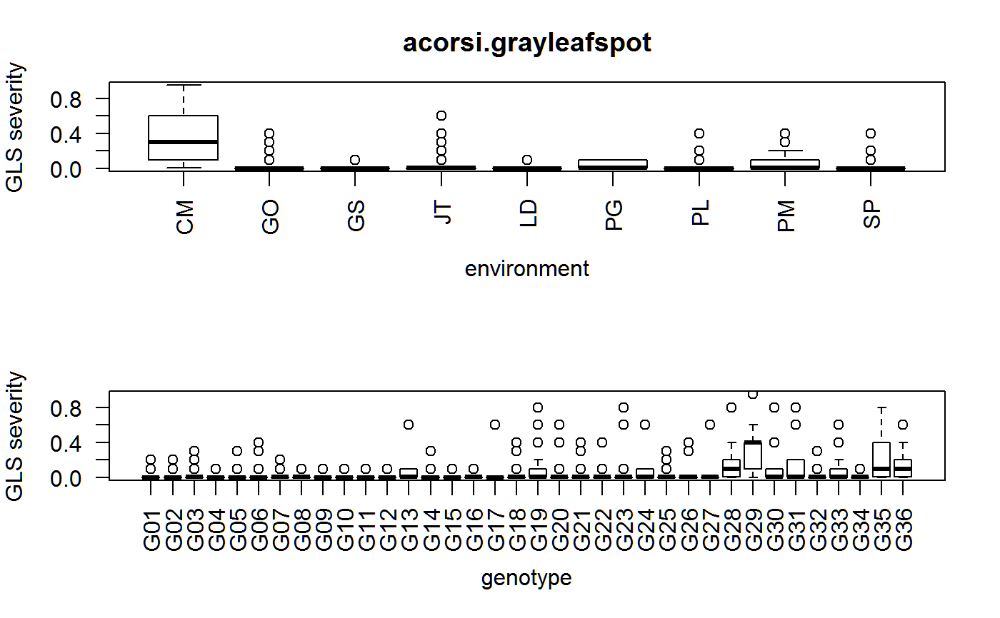
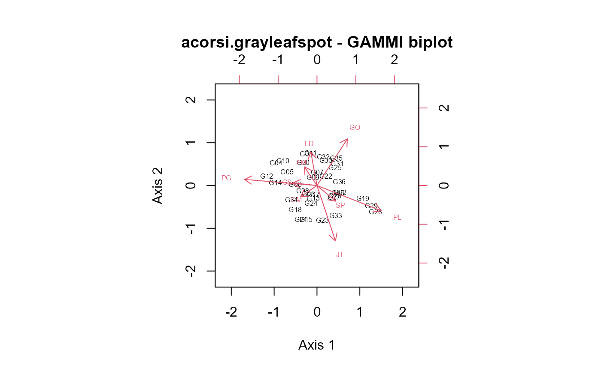

acorsi.grayleafspot.RdMulti-environment trial evaluating 36 maize genotypes in 9 locations
data("acorsi.grayleafspot")
A data frame with 324 observations on the following 3 variables.
gengenotype, 36 levels
envenvironment, 9 levels
repreplicate, 2 levels
ygrey leaf spot severity
Experiments conducted in 9 environments in Brazil in 2010-11. Each location had an RCB with 2 reps.
The response variable is the percentage of leaf area affected by gray leaf spot within each experimental unit (plot).
Acorsi et al. use this data to illustrate the fitting of a generalized AMMI model with non-normal data.
C. R. L. Acorsi, T. A. Guedes, M. M. D. Coan, R. J. B. Pinto, C. A. Scapim, C. A. P. Pacheco, P. E. O. Guimaraes, C. R. Casela. (2016). Applying the generalized additive main effects and multiplicative interaction model to analysis of maize genotypes resistant to grey leaf spot. Journal of Agricultural Science. http://doi.org/10.1017/S0021859616001015
Electronic data and R code kindly provided by Marlon Coan.
None
library(agridat) data(acorsi.grayleafspot) dat <- acorsi.grayleafspot # Acorsi figure 2. Note: Acorsi used cell means op <- par(mfrow=c(2,1), mar=c(5,4,3,2)) boxplot(y ~ env, dat, las=2, xlab="environment", ylab="GLS severity") title("acorsi.grayleafspot") boxplot(y ~ gen, dat, las=2, xlab="genotype", ylab="GLS severity")par(op) # \dontrun{ # GLM models # glm main-effects model with logit u(1-u) and wedderburn u^2(1-u)^2 # variance functions # glm1 <- glm(y~ env/rep + gen + env, data=dat, family=quasibinomial) # glm2 <- glm(y~ env/rep + gen + env, data=dat, family=wedderburn) # plot(glm2, which=1); plot(glm2, which=2) # GAMMI models of Acorsi. See also section 7.4 of Turner # "Generalized nonlinear models in R: An overview of the gnm package" # full gnm model with wedderburn, seems to work libs(gnm) set.seed(1) gnm1 <- gnm(y ~ env/rep + env + gen + instances(Mult(env,gen),2), data=dat, family=wedderburn, iterMax =800)#> Initialising #> Running start-up iterations.. #> Running main iterations......................................................... #> ................................................................................ #> ................................................................................ #> ................ #> Done#> [1] 433.8548# summary(gnm1) # anova(gnm1, test ="F") # anodev, Acorsi table 4 ## Df Deviance Resid. Df Resid. Dev F Pr(>F) ## NULL 647 3355.5 ## env 8 1045.09 639 2310.4 68.4696 < 2.2e-16 *** ## env:rep 9 12.33 630 2298.1 0.7183 0.6923 ## gen 35 1176.23 595 1121.9 17.6142 < 2.2e-16 *** ## Mult(env, gen, inst = 1) 42 375.94 553 745.9 4.6915 < 2.2e-16 *** ## Mult(env, gen, inst = 2) 40 312.06 513 433.9 4.0889 3.712e-14 *** # maybe better, start simple and build up the model gnm2a <- gnm(y ~ env/rep + env + gen, data=dat, family=wedderburn, iterMax =800) # add first interaction term res2a <- residSVD(gnm2a, env, gen, 2) gnm2b <- update(gnm2a, . ~ . + Mult(env,gen,inst=1), start = c(coef(gnm2a), res2a[, 1]))#> Running main iterations......................................................... #> ................................................................................ #> ................................................................. #> Done#> [1] 692.1921# add second interaction term res2b <- residSVD(gnm2b, env, gen, 2) gnm2c <- update(gnm2b, . ~ . + Mult(env,gen,inst=1) + Mult(env,gen,inst=2), start = c(coef(gnm2a), res2a[, 1], res2b[,1]))#> Running main iterations......................................................... #> ................................................................................ #> ................................................................................ #> ................................................................................ #> ................................................................................ #> .................... #> Done#> [1] 433.8548# anova(gnm2c) # weird error message # note, to build the ammi biplot, use the first column of res2a to get # axis 1, and the FIRST column of res2b to get axis 2. Slightly confusing emat <- cbind(res2a[1:9, 1], res2b[1:9, 1]) rownames(emat) <- gsub("fac1.", "", rownames(emat)) gmat <- cbind(res2a[10:45, 1], res2b[10:45, 1]) rownames(gmat) <- gsub("fac2.", "", rownames(gmat)) # match Acorsi figure 4 biplot(gmat, emat, xlim=c(-2.2, 2.2), ylim=c(-2.2, 2.2), expand=2, cex=0.5, xlab="Axis 1", ylab="Axis 2", main="acorsi.grayleafspot - GAMMI biplot")# }